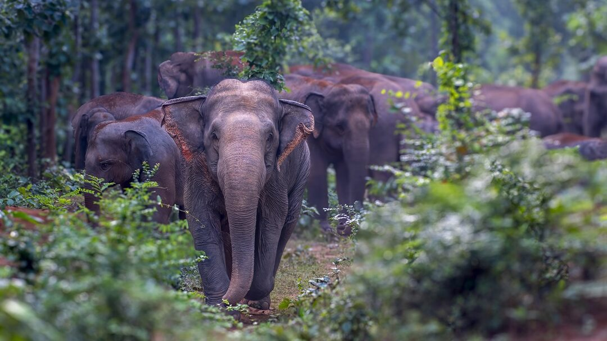

🌿 Jhargram welcomes you
Jhargram, the crown jewel of Jangalmahal, is a mesmerizing destination where royal heritage, ancient temples, dense forests, sparkling rivers, scenic waterfalls, wildlife, and vibrant tribal culture come together to create an unforgettable tourism experience. From the majestic Jhargram Raj Palace to the serene forests of Belpahari, from the sacred Kanak Durga Temple to the breathtaking Ghagra Waterfall, every corner of Jhargram tells a story of history, nature, spirituality, and adventure. This Story Map explores the diverse tourist attractions that make Jhargram one of the most beautiful and culturally rich destinations in West Bengal. 🌿🏰